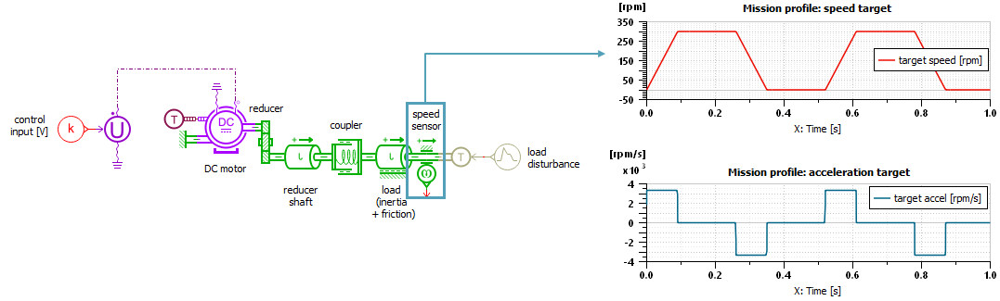
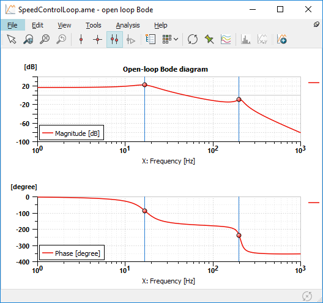
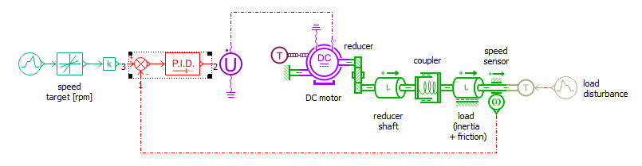
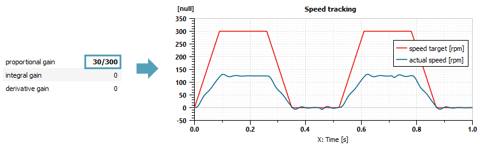
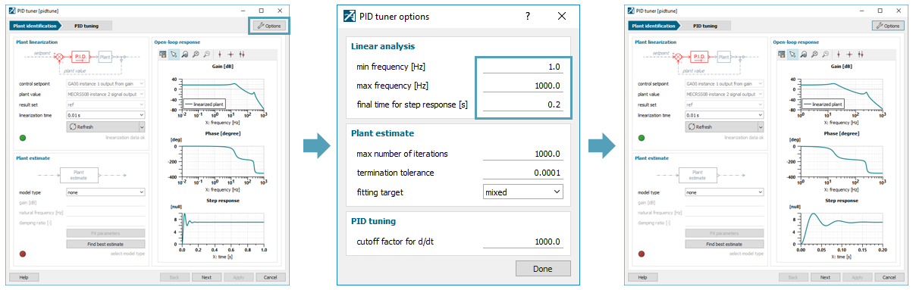
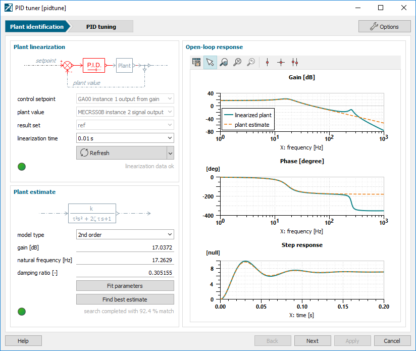
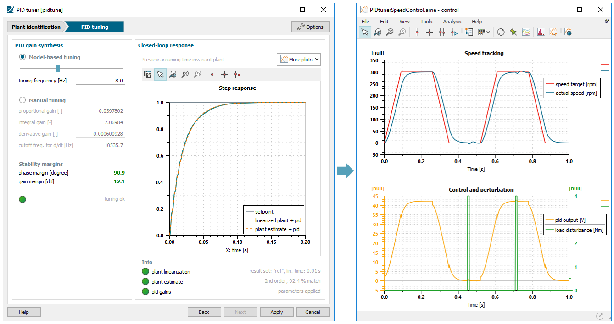
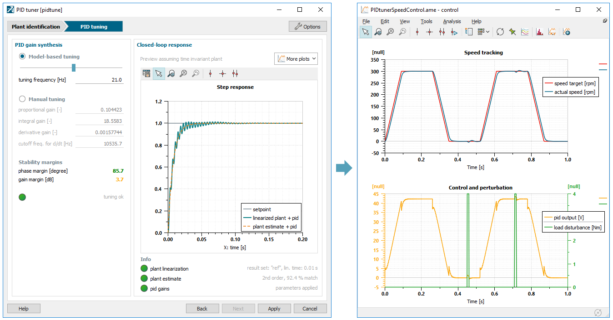

This demo illustrates how to calibrate a speed control loop for an electro-mechanical system with help of the PID tuner
$AME/demo/Libraries/SIG/PIDtunerSpeedControl.ame
Let's consider a 48 V, 400 W drive system as depicted in Figure 1. The system is made of a brushless DC motor which moves a reciprocating load through a reduction gear. The load is connected to the reducer shaft with a coupling device represented by its stiffness and damping. The load consists of an inertia and a resistive torque proportional to speed (e.g. viscous friction). External torque disturbance may also affect the load.
The objective is to control the speed of the load so that it follows a mission profile made of constant acceleration and constant speed sequences in the 0-300 rpm range. For this purpose, the system is equipped with a speed sensor and a varying voltage source to control the DC motor (0 to +48 V).

Figure 1: Plant model and mission profile
Although this step is not required when using the PID tuner, let's quickly analyze the system we are about to control. For this, let's run a simulation to compute linearization of the open-loop model and plot its Bode diagram (available in the plot configuration open-loop Bode diagram). One can recognize a low-pass system with two resonances around 17 Hz and 206 Hz coming from mechanical and electrical dynamics.

Figure 2: Open-loop frequency response of the plant
Let's close the loop using the PID controller SIGPIDT0. According to the PID tuner guidelines,

Figure 3: Closed-loop model
The system can be simulated to check that the load is moving in a stable fashion.

Figure 4: Initial results with pre-scaling of Kp
Let's open the PID tuner by clicking on its icon, either from the Variables or from the Parameters view. The tool loads linear analysis data and displays the Bode diagram and the step response as depicted on the left hand side of Figure 5. Let's first adjust default frequency and time limits to focus on the interesting part of those curves (e.g. dominant modes centered in the frequency range, full transient for step response). For this, go into the Options menu and change the frequency range of interest to 1-1000 Hz and the time scale to 0.2 s. One can recognize the diagram that was extracted previously from the stand-alone open-loop model.

Figure 5: Adjusting frequency and time scales
The plant is now correctly loaded. By changing the linearization time from the corresponding combo box, it can confirmed that this model is time invariant since the Bode curve doesn't change with linearization point. Therefore, we don't have to think about which one to select for gain synthesis and we can move to the next step.
A simplified model has to be fitted on top of this linearization with the Plant estimate widget. Although this can be done manually by selecting a model type in the list and tuning its parameters until a good match is found, let's try the auto-fitting feature by hitting the Find best estimate button. The tool quickly converges to a second order model as shown in Figure 6. What matters here is to correctly capture the dominant dynamic which is best represented by the step response or by the left hand side of the frequency response. Model fit is completed, so we can move to the PID tuning by hitting the Next button

Figure 6: Fitting a model
By selecting a slower or a faster response with the slider bar, the tool automatically computes the PID gains. Therefore, calibration is about choosing the desired dynamic, while taking care of stability margins to deal with potential perturbations or plant variations. The tuning setup can be applied to the submodel with the Apply button. After updating the simulation, results can be confirmed using the plot configuration control.
Let's take 2 tuning examples:

Figure 7: Closed-loop response with robust tuning

Figure 8: Closed-loop response with dynamic tuning
In the example above, the controller doesn't reach the upper voltage limit. One can however protect the system by enabling saturation of the PID output. For this, turn the limit output option of the PID to yes and set max value to 48. Default settings are recommended for saturation (e.g. back calculation and tracking mode with Ks = Ki). Performance can still be fine tuned either from the slider bar or by editing gains individually (preferably in the tool to benefit from the pre-visualization of their influence).
Adding a position control loop on this system by cascading 2 PIDs and leveraging the PID tuner.